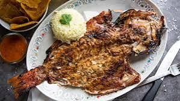

18.Nayarit

- Platillo: Pescado zarandeado
- Ingredientes: Pescado entero (generalmente pargo), adobo de chiles, limón, ajo, soya, asado al carbón.
- Historia: Tradición de pescadores del Pacífico que preparaban el pescado en rejillas de madera zarandeándolo (moviéndolo).
- Dato curioso: El nombre viene del movimiento al asar el pescado entre dos rejillas.